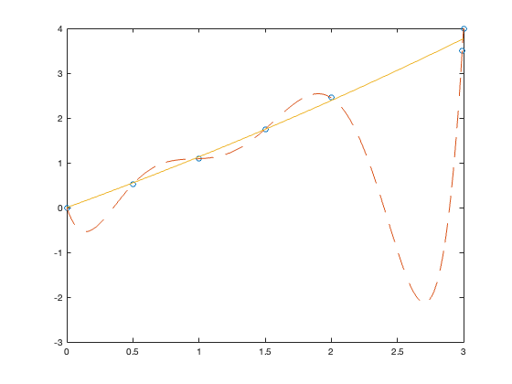
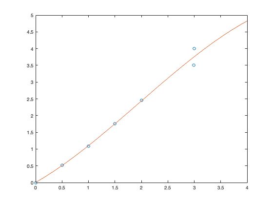

clear %mk metod x=[0; 0.5; 1; 1.5; 2; 2.99; 3]; y=[0; 0.52; 1.09; 1.75; 2.45; 3.5; 4]; A=[ x x.^2]; B = A' *A; C = A' * y; d=B\C; coeff1=d(1); coeff2=d(2); n=length(x); e=norm(A*d-y)/sqrt(n); xmq = 0:1/100:3; ymq = coeff2*(xmq.^2) + coeff1*xmq ; %Polynominterpolation x = [0, 0.5, 1, 1.5, 2, 2.99, 3]; y = [0, 0.52, 1.09, 1.75, 2.45, 3.5, 4.0]; p = polyfit(x,y,6); f = @(x) polyval(p,x); a =min(x):1/100:max(x); plot(x,y,'o',a,f(a),'--', xmq,ymq,'-');
Polynominterpolation med Newtons ansats
clear % Datapunkter att interpolera x = [0 0.5 1 1.5 2 2.99 3]'; y = [0 0.52 1.09 1.75 2.45 3.5 4]'; % Skapa matrisen (se slides) B = [ones(size(x)), x-x(1), (x-x(1)).*(x-x(2)), (x-x(1)).*(x-x(2)).*(x-x(3))]; % Lös a = B\y; % Polynomet p = @(t) a(1) + a(2)*(t-x(1)) + a(3)*(t-x(1)).*(t-x(2)) + a(4)*(t-x(1)).*(t-x(2)).*(t-x(3)); % Plotta datapunkter och polynom clf plot(x, y, 'o') hold on fplot(p, [0, 4])